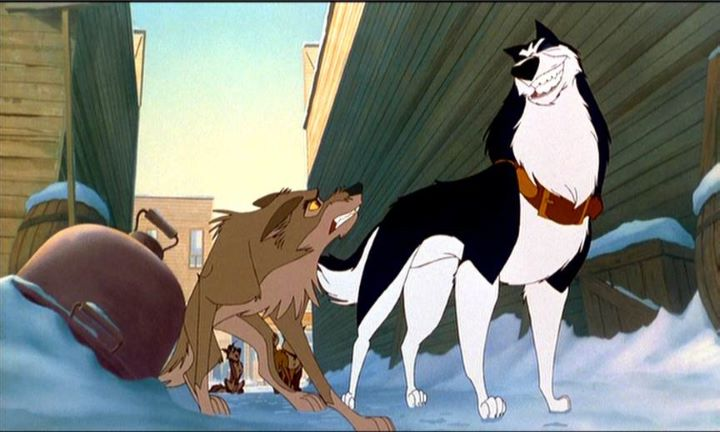

Growing up in the 1990's, I was spoiled with 2D animated films. There's a whole bunch of movies that aren't considered "classics," but somehow ended up in our homes, schools, and daycare centers and mainstays: nearly all children growing up in that decade will recognize them. The types of movies I'm thinking of include "An American Tail - Fievel Goes West," "Ferngully - The Last Rainforest," and "Balto," among others.While I certainly recognize "Balto" (it would spawn some direct-to-video sequels too), I admit I don't remember having watched the whole movie properly as a kid. Maybe I just didn't pay attention while it was on television. I finally got around to watching it in 2019, decades after its release. I admit, I'm impressed. The story's good! Of course, it helps that I'm also I sucker for cartoon dogs. If you liked "All Dogs Go To Heaven," "101 Dalmations," or "Oliver & Company," this could very well be a favorite of yours too.Taking place in a small town in Northern Alaska, the story is loosely based on a real dog named Balto, who led a sled team to deliver life-saving medicine through a snowstorm in 1925. To give the story more gravity, the movie is bookended with live-action sequences of a grandmother and child searching for the real monuement in New York dedicated to the dog. In the movie, Balto is a half-dog, half-wolf hybrid, and is mistrusted by the human townspeople as an unwanted stray. Trying to prove himself isn't easy, since Steele, the town's popular sleddog, is a nasty bully. But when the townspeople get sick (in particular, the cute girl that owns Jenna, a brave and beautiful dog that Balto has a crush on), and Steele fails to get the medicine on time, Balto rushes out to do the right thing, even though it means helping those who despise him.It's a surprisingly dark movie. Steele is a REALLY nasty bully, not hesitating to insult Balto's parents, or to attack other rival sleddogs to remain on top. To make the threat of disease seem real, one scene shows the local craftsman making child-sized coffins. Yikes. But within the short runtime (that feels longer than it's acutal 77 minutes), the movie manages to introduce us to all the characters, and make us care about the issue at hand. It's genuinely thrilling to see Balto finally arrive back into town with the medicine, even though we know from the start it'll come to be. The theme to accept all parts of yourself, even what others despise, is a good message. Standard kids-film story? Kinda. But it's effective. It helps that the characters are cute and funny. Balto has some sidekicks in Borris, an old Russian goose, and Muk and Luk, two fat but friendly polar bears. They are expressive and well-animated, like one would expect from a Don Bluth movie (technically, Don wasn't involved, but Steven Spielberg's Amblimation had learned the techniques from collaborating with Don in the past). Even Rosy, the sick little girl, is adorable without being annoying. And of course, the dogs all look great, distinct and recongizable from each other despite the large cast. Taking place in a white wasteland, there's only so much that can be done in terms of design, but good use of early CGI-hybrid techniques make the animation hold up well.The voice cast also impressed me. Kevin Bacon is a great lead, perfectly suited to the handsome and humble stray. Jim Cummings makes a great villain. The entire cast is pretty great. The music is... cinematic, but forgettable. "Balto" is a great hidden gem that probably got lost in the massive influx of animated movies it competed against. But I'd proudly put it up against the best Disney and Don Bluth had to offer from that timeframe. It wouldn't win against them, but it's a great crowdpleaser that'll make viewers cheer with howls.
- "Ani" More reviews can be found at : https://2danicritic.github.io/ Previous review: review_Bakemonogatari Next review: review_Barefoot_Gen